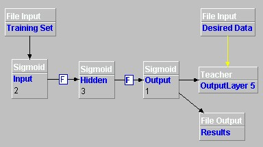

Now that the network has been taught the problem, it can be tested.
Add an output file and configure as follows:
| Parameter | Value |
|---|---|
| Name | Results |
| File Name | c:\joone\results.txt |
Connect the Output layer to the Results layer.

In the control panel, set learning to FALSE.
Set epochs to 1.
This will run the network once and write the results to the Results layer.
Click Run on the control panel. Now view the results.txt file that has been produced. It should look something like this:
0.00947656811426465This shows that where the input values are the same, the result is near zero, and where the input values are different, the result is near one.
0.9885851252760814
0.9885044012541783
0.014494768371900018